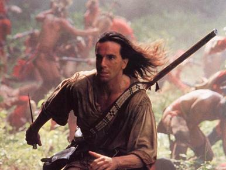

The Last of the Mohicans |
 | |
|
|
These viewing guides are designed for use with the 1992 video, The Last of the Mohicans, part of a study of American literature. Guide #1 is designed for general-level students; Guide #2 is designed for college prep students. Teachers are welcome to use either one in an educational setting. Commercial use without permission is prohibited. |
|
|
Questions? Comments? Contact me.
|
||